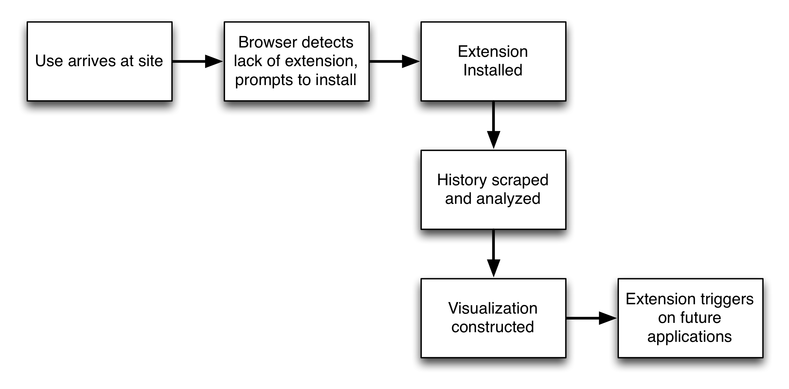
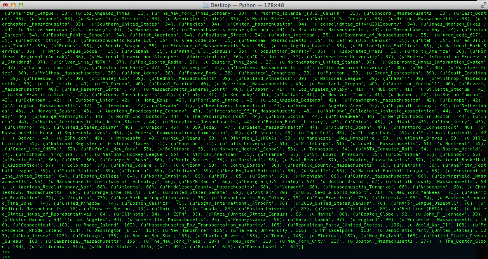
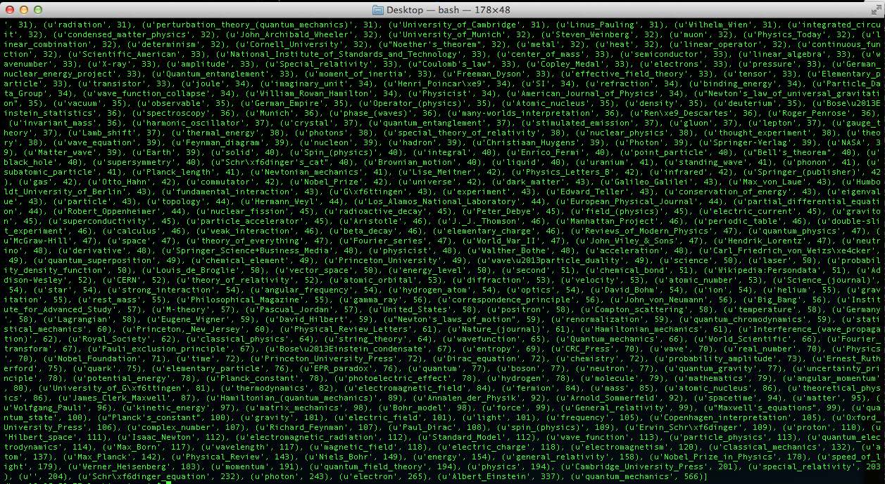
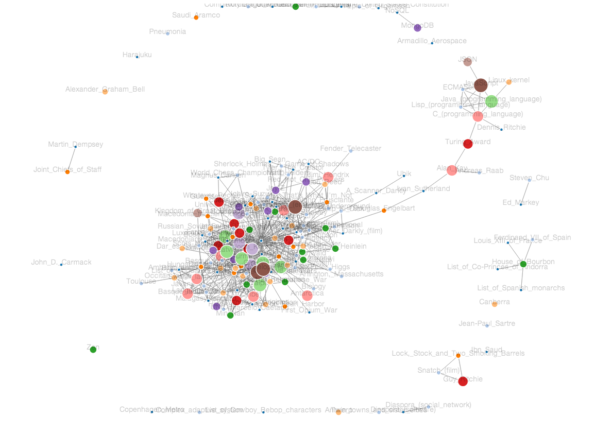
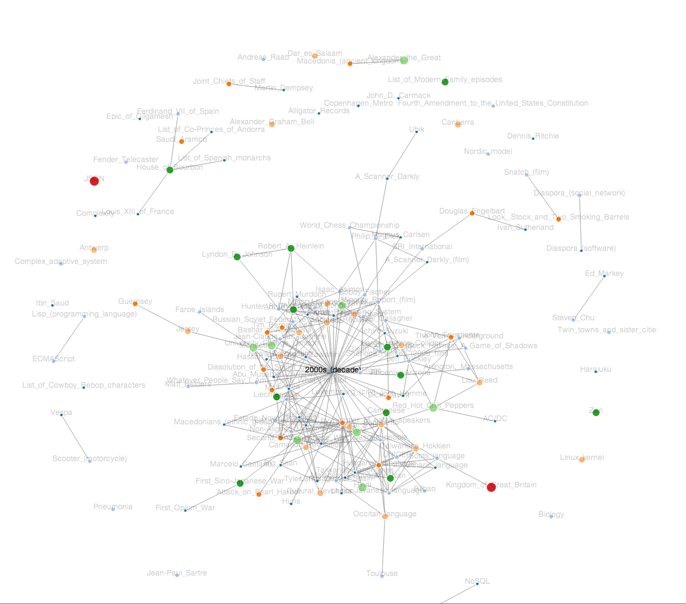

WikiHistory Progress
Contents
- Background
- Scraping History
- Application Structure
- Making Sense of History Data
- Non-direct Pages
- Current Steps
- Application Ideas
Background
The goal of this project is to explore what a person's wikipedia history can tell us about the things they know, are interested in, care about, or are familiar with. Exploring such data could provide a tool for self-reflection, discovery of new topics, realizataion of major topics and connections in one's interests, or sources of influence in the things one thinks about. Wikipedia history is an interesting data set to use because it is one that is used in both a person's personal and professional lives. Furthermore, the wikipedia data set is richly annotated and structured, allowing us to perform many interesting directions of analysis.
Scraping History
The first step in building such a project is to get access to a person's wikipedia history. Getting access to a browsers history is not something accesible through standard HTML/JS capabilities, so we must rely on using browser extensions or plugins. So far, I have focused on building this projcet using the Chrome browser, but history extension capabilites exist for most other modern browsers.
Access to Chrome's stored history is detailed on their extensions documentation. Of course, the extenesion can only read the history stored by the browser, so if a user clears their browser very frequently, we would not be able to provide very interesting results (at first... The extension, once installed, can record the wikipedia page hits as they come in and store them separately from browser history).
Application Structure
Because the project requires more than a simple website, it may be helpful to outline the overall structure of the project and the flow of the user experience.
The site built with the Meteor framework, uses MongoDB server-side to store history points, and renders everything using D3. The extension code will vary from browser to browser. The history data is separated from the explicit content of the website where visualizations are rendered, so it can be used for other outside applications beyond the site.
Making Sense of History Data
The extension makes a call to deliver all history results that contain the string 'http://en.wikipedia.org/wiki/*'. This limits the history results to English pages (for the time being) and excludes other wiki addresses such as API calls and such. The history data also contains the time of last visit and number of previous visits for each URL.
The data is cleaned (wiki pages that are just image files or redirects) and put into a structure that is then delivered from the extension into the main page of the browser. The browser receives this message (all messaging handled with javascript) and writes it to the server-side database. Once on the database, any number of python scripts are used to analyze and form the data. Once finished processsing, the server returns a cleaner, more structured set of analyzed data to the browser for rendering.
Exactly how to analyze the data has been a non-trivial task both in terms of scalability and extracting meaning. The next two sections go over approaches I've built so far.
Raw Inlinks
My first approach was to simply take all browser history, scrape those pages for all internal wikipedia links, and then scrape all of those linked pages for internal wikipedia links. This then gave me three sets of page data: The direct pages that a user visited, the pages that are one link away form the pages a user visited, and the pages that are two links away from the pages a user visited.
A simple mode of analysis on this would then be to simply count up among all those pages how many times a single URL appears across thre three sets. This provides some strengths, such as categories pop out quickly. If a user visited Boston Red Sox and New York Yankees, Major Leagure baseball is heavily present among the sets of data and pops out larger than either the Red Sox or Yankees page. However, it also has some obvious disadvantages, such that very common themes (such as 'English Language' or 'United States') become disproportionately large and dominate the results. One way to counteract this is to normalize the page results. That is, divide the number of occurences in the data set by the number of links that exist on each page. So, if 'United States' appears 2500 times in the data, but contains 250 links, it's normalized count would be 10.
Two example results of such analysis for a history of 1 page are shown below. The history was seeded to contain only 'Boston' or 'Quantum_Mechanics', and the following images show the resulting page links. Again, remember that the goal is to understand what related things a person may know given their search history.
 {kind=link}
{kind=link}
A full analysis of this technique run across my entire history of wikipedia searches is shown below. Both normalized and non-normalized results are shown. You can see that for first and second-hop results, the non normalized results show very general topics (United States, New York Times, etc), where as the normalized results produce a little better output (computer science, Media Lab, etc)
dhcp-18-85-58-77:analysis travis$ python2.7 analyze_scrape.py Beginning Direct Page Analysis ------------------------------ Total Number of Pages: 1132 The page with the most hits has 20 hits. Top ten results: [(u'Andorra', 20), (u'Guy_Ritchie', 12), (u'Saudi_Arabia', 10), (u'Ibn_Saud', 10), (u'Lyndon_B._Johnson', 10), (u'Boston', 9), (u'Joe_Haldeman', 7), (u'Arecibo_Observatory', 7), (u'Motorcycle_safety', 7), (u'Paul_Ekman', 7)] Top ten normalized results: [(u'Steve_Jobs', 5.0), (u'Pablo_escobar', 1.0), (u'Steve_jobs', 1.0), (u'Space_Syntax', 1.0), (u'Eastern_promises', 1.0), (u'Media_Lab', 1.0), (u'DEKA', 1.0), (u'Complexity_theory', 0.5454545454545454), (u'Engolasters', 0.4), (u'Martha_Rogers,_Ph.D.', 0.4)] Finished Direct Page Analysis ------------------------------ Beginning First Hop Page Analysis ------------------------------ Total Number of Pages: 104596 The page with the most hits has 408 hits. Top ten results: [(u'United_States', 408), (u'', 340), (u'The_New_York_Times', 279), (u'Wikipedia:Persondata', 222), (u'The_Guardian', 158), (u'European_Union', 138), (u'California', 137), (u'World_War_II', 129), (u'New_York_City', 127), (u'Rolling_Stone', 127)] Top ten normalized results: [(u'Allmusic', 50.0), (u'computer_science', 35.0), (u'artificial_intelligence', 31.0), (u'Eastern_Bloc', 20.0), (u'Steve_Jobs', 17.0), (u'Syrian_civil_war', 16.0), (u'operating_system', 16.0), (u'Computer_Science', 12.0), (u'Arabian_Peninsula', 12.0), (u'Flow_My_Tears,_the_Policeman_Said', 11.0)] Finished First Hop Page Analysis ------------------------------ Beginning Second Hop Page Analysis ------------------------------ Total Number of Pages: 2037659 The page with the most hits has 123860 hits. Top ten results: [(u'', 123860), (u'United_States', 62694), (u'The_New_York_Times', 39803), (u'World_War_II', 31067), (u'United_Kingdom', 26451), (u'New_York_City', 25146), (u'Wikipedia:Persondata', 23011), (u'France', 21710), (u'European_Union', 21437), (u'English_language', 20925)] Top ten normalized results: [(u'Allmusic', 8939.0), (u'Pulitzer_Prize', 4949.0), (u'operating_system', 3240.0), (u'Eastern_Bloc', 2603.0), (u'computer_science', 2601.0), (u'Sun_Yat-sen', 2093.0), (u'Iron_Age', 2059.0), (u'Arabian_Peninsula', 2046.0), (u'commander-in-chief', 1764.0), (u'artificial_intelligence', 1715.0)] Finished Second Hop Page Analysis ------------------------------
Page Similarity
A second technique that is currently being used to render visualizations is a bit more advanced than simple page counts. Similarly, this technique gathers all the pages a user has visited and their first and second hop pages. However, instead of simply counting pages, we compare every page to the rest. We calculate 1) the number of pages that link into that page, and 2) the number of connections shared between that page and each other individual page. Pages that have many inlinks, and many pages with which it shares many connections, are believed to be more relevant to a person. While this method is a bit slower, as it requires the script to compare all pages to all others, it provides seemingly more meaningful results.
Sample results from this technique are shown in the following images. Note, we can see how topics of interest pop out and group together (e.g. the cluster containing Linux, C programming language, Doug Englebart, etc).
 {kind=link}
{kind=link}
Non-direct Pages
A remaining goal is to show pages that the user has not directly visited, but that we believe to be something they would know something about. This can be used both to create a fuller graph, or to recommend next steps along a given trajectory. To build this, we leverage the first and second hop pages, but use the direct pages as ground truths. Still needs more work...
Current Steps
Cleaning Data, group segmentation, packaging the experience for outside users (user accounts, priveleges, delete data access, etc), Visualization functions and features, immersion integration.
Application Ideas
- Spatial Influence Across Lab
- Timeline of new clusters
- Live-browsing People Routing